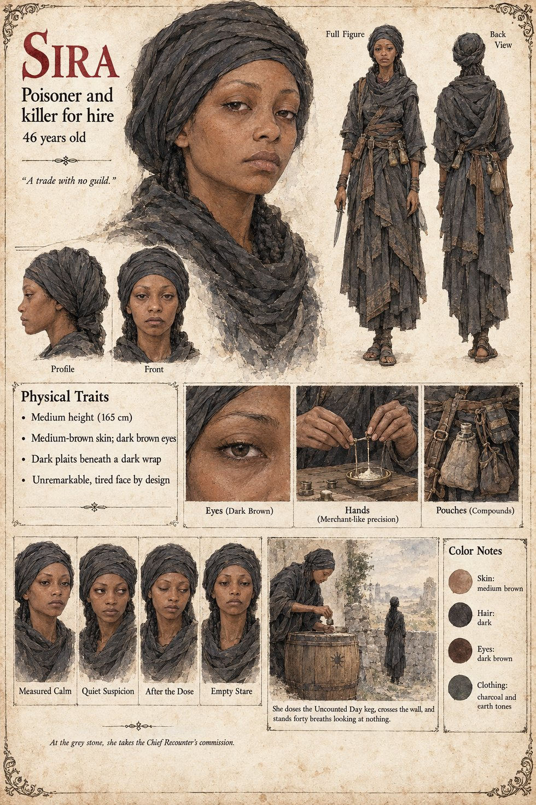

Sira
Poisoner and killer for hire · the woman the Chief Recounter pays four hundred weights · 46 or so
Middle height, forty-six or so, with the unremarkable, slightly tired face of a person who has spent a career being overlooked and has come to depend on it. She has killed sixty-one people in twenty-two years, fifty-eight of them by poison, in a trade with no guild but exacting manners, and has never once been asked to do it for a reason she could respect. The Chief Recounter Fode finds her, after nine days, through the woman who sells sleep by the pinch, and meets her on the flat grey stone at the fourth hour of the night. She listens. The price of a dog, she says, is a fish; when he says it is not a dog, she says it is four hundred weights, the cost of a small king. She adds a condition that surprises him: no poison. A thing that has survived fifty years of kitchen scraps and river water and a queen's sedative has earned the courtesy of a fast method, and she will use a blade, once, and it will not know. It is the closest she has come in twenty-two years to a scruple, and she dislikes it exactly as much as a professional dislikes a habit she cannot bill for.
On the twenty-eighth of Mavren she makes the acquaintance of Hawa's delivery boy at the back door of the Weighmaster's Table and does not hurt him. She doses the Uncounted Day keg with a compound she uses on guards, so as not to have to deal with witnesses, in an amount calculated for the lightest man likely to drink from it, a lean man of sixty-one. It is a considerate dose, and she notes with mild irritation that considerateness has crept into her work. She comes over the back wall a little past the second hour after midnight, waits in the shadow of the lean-to until the wardens' breathing has settled into the rhythm she dosed it for, and crosses the yard. The dog is asleep on its back with one paw chasing a rabbit that had died of old age before she was born. It wakes, as it always does at a step, and beats its tail twice against the mat, and comes to lick her hand. She would say, if anyone had ever asked her, that it was the easiest commission of her career and the only one she had not been able to enjoy, and that the two facts were related. She stands in the yard for some forty breaths afterward, with the blade cleaned and put away, looking at nothing, and goes back over the wall. Observer 1,451, arriving eleven minutes late, sees a figure go over the wall ahead of her. The Archival Log calls her a paid agent whose identity was never established. The manuscript does not say what becomes of her.
The manuscript gives her age, her height, her face, her price and her habits; the sheet's medium-brown skin, dark brown eyes, dark plaits beneath a dark wrap, pouches of compounds and charcoal-and-earth dress are its own. Its title strip, Poisoner and killer for hire, and its printed line, A trade with no guild., follow the manuscript. Its panels are Measured Calm, Quiet Suspicion, After the Dose and Empty Stare, and its scenes At the grey stone, she takes the Chief Recounter's commission. and She doses the Uncounted Day keg, crosses the wall, and stands forty breaths looking at nothing.
“She had killed sixty-one people in twenty-two years”